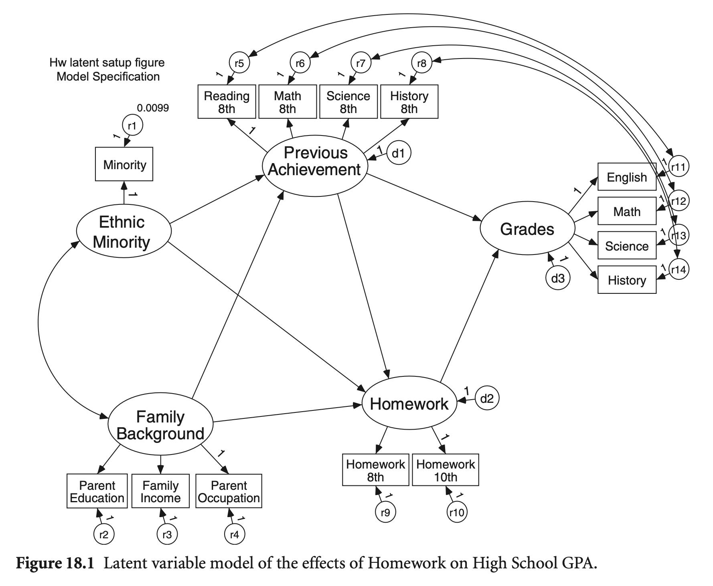
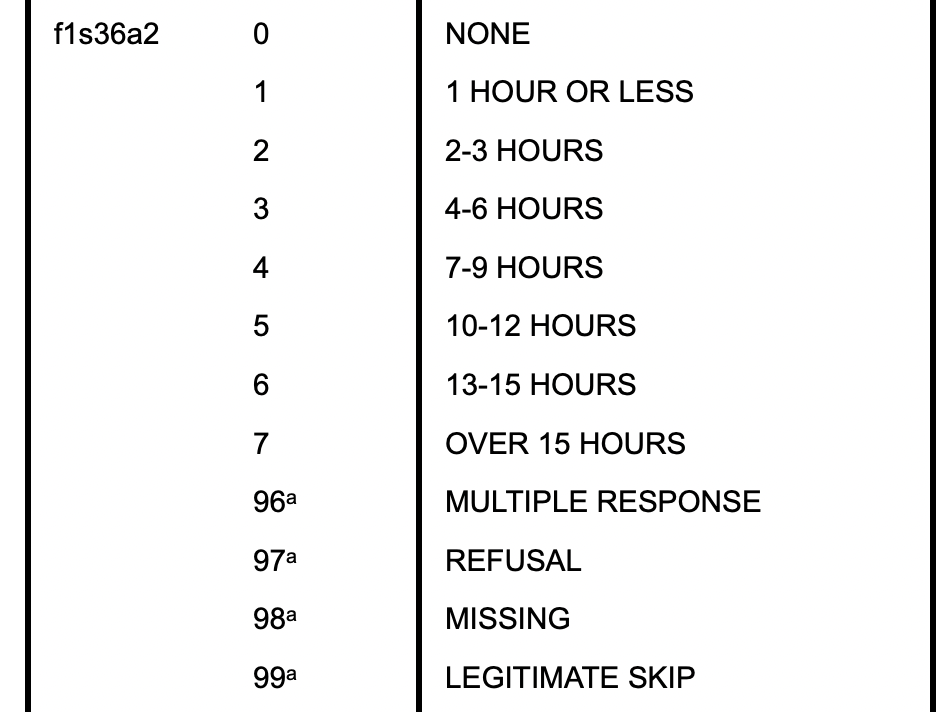
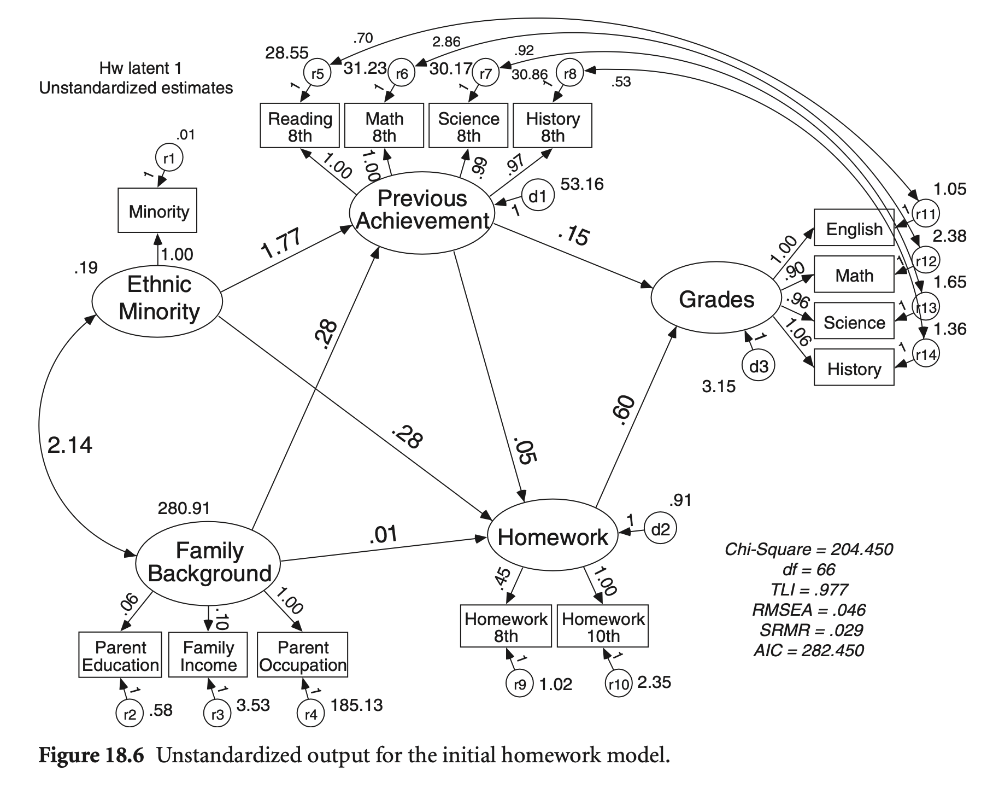
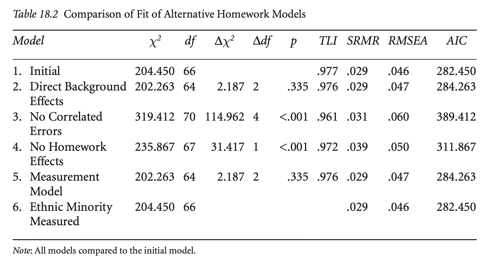
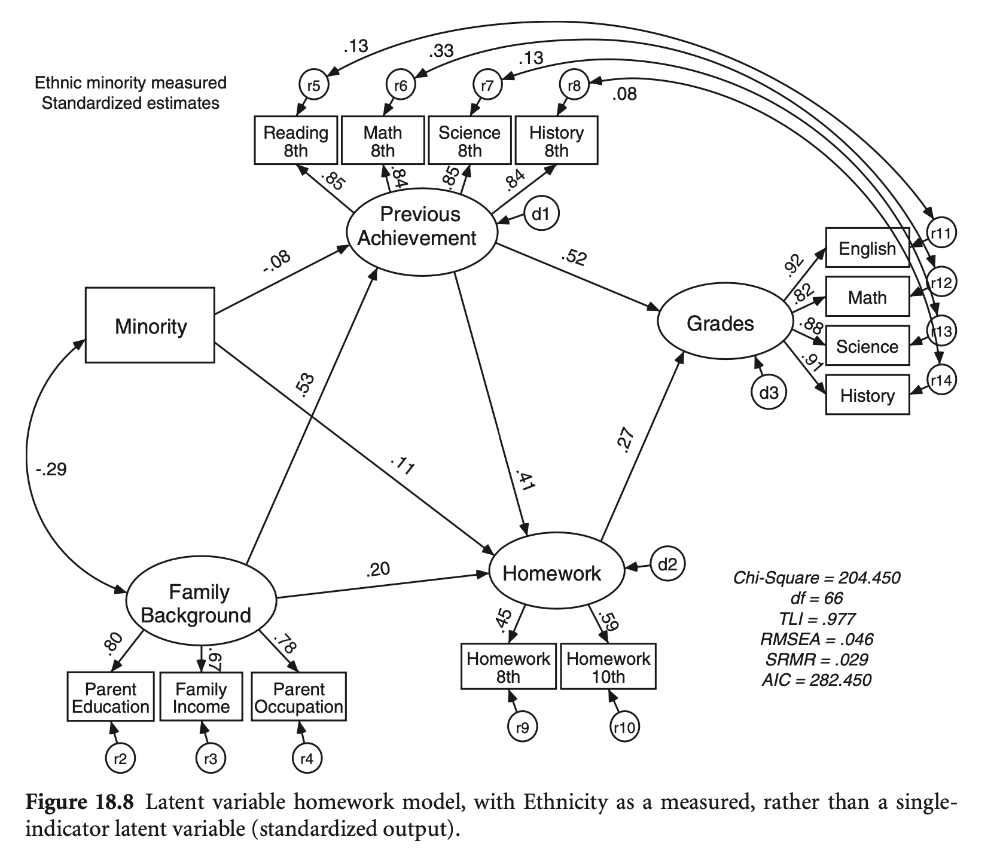
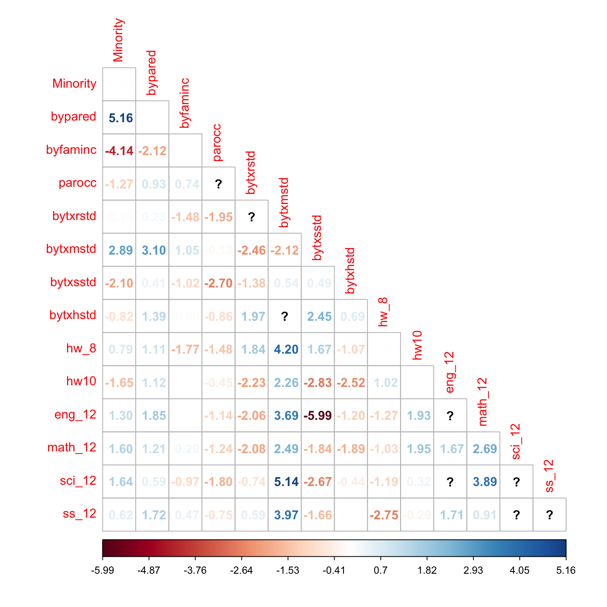
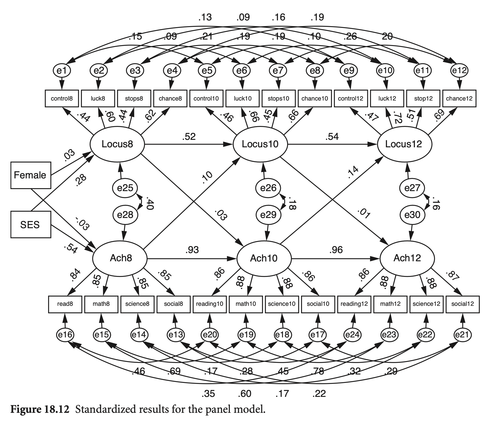
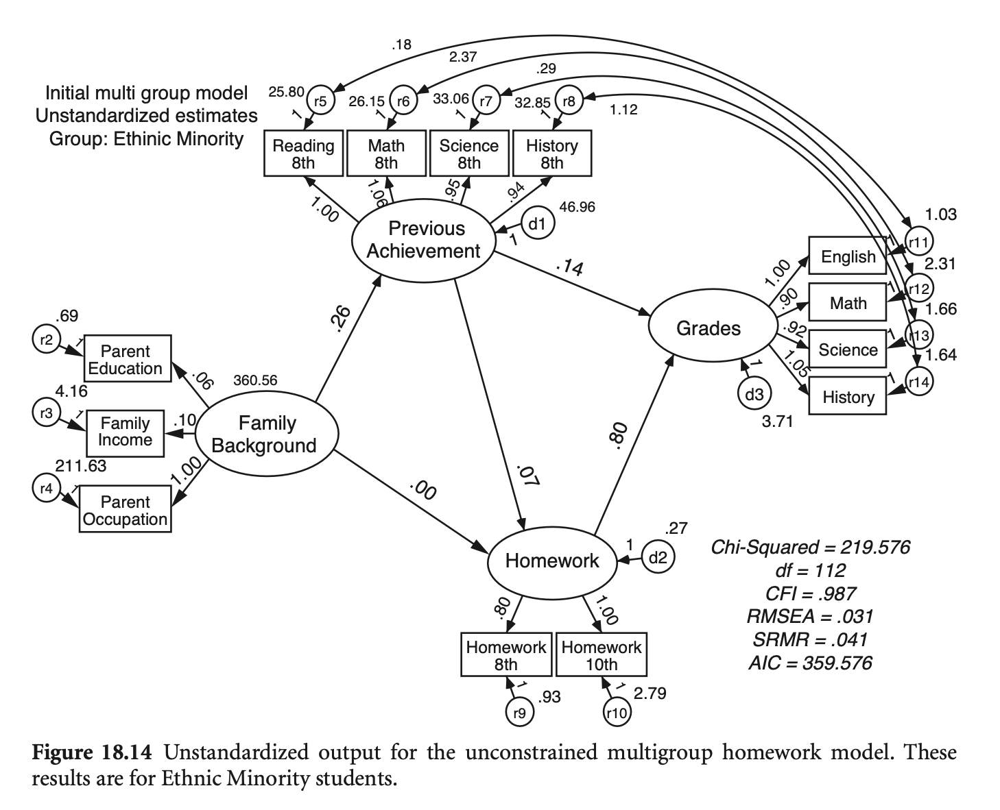
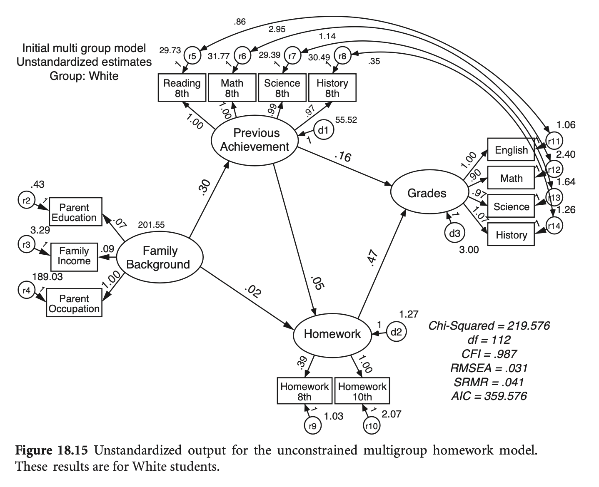
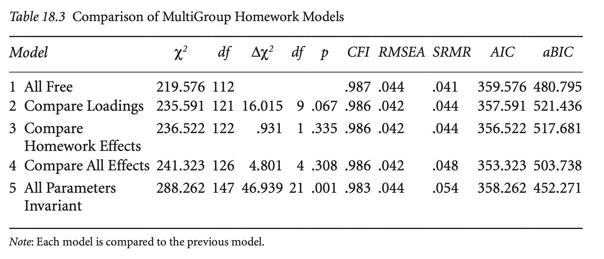

Load libraries
library(haven)
library(psych)
library(tidyverse)
library(lavaan)
library(semTools)
library(manymome)Multiple Regression and Beyond (3e) by Timothy Z. Keith
library(haven)
library(psych)
library(tidyverse)
library(lavaan)
library(semTools)
library(manymome)A Latent Variable Homework Model
Single indicators와 correlated errors를 가지는 모형을 구성

hw <- haven::read_sav("data/chap 18 latent var SEM 2/HW latent matrix.sav")
hwcov <- hw[c(2:15), c(3:16)] |>
as.matrix() |>
lav_matrix_vechr(diagonal = TRUE) |>
getCov(names = hw$varname_[2:15], sds = hw[16, 3:16] |> as.double())
# generate a dataset with the same covariance matrix
set.seed(123)
hw_sim <- semTools::kd(hwcov, n = 1000, type = "exact")
# replace Minority values to 1 if it > 0.3, otherwise 0
hw_sim <- hw_sim |>
mutate(Minority = ifelse(Minority > 0.3, 1, 0))hw_model <- "
# measurement model
EthnicMinor =~ Minority
Famback =~ parocc + bypared + byfaminc
PrevAch =~ bytxrstd + bytxmstd + bytxsstd + bytxhstd
HW =~ hw10 + hw_8
Grades =~ eng_12 + math_12 + sci_12 + ss_12
# residual covariacne/variance
Minority ~~ 0.0099*Minority
bytxrstd ~~ eng_12
bytxmstd ~~ math_12
bytxsstd ~~ sci_12
bytxhstd ~~ ss_12
# structural model
PrevAch ~ b1*Famback + b2*EthnicMinor
Grades ~ b3*PrevAch + b4*HW
HW ~ b5*PrevAch + b6*Famback + b7*EthnicMinor
# indirect effects; famback > homework > grades
ind_fam := b4*b6
# indirect effects; ethnicminor > homework > grades
ind_ethinic := b4*b7
"
hw_fit <- sem(hw_model, sample.cov = hwcov, sample.nobs = 1000)
summary(hw_fit, standardized = TRUE, fit.measures = TRUE) |> print()lavaan 0.6-19 ended normally after 277 iterations
Estimator ML
Optimization method NLMINB
Number of model parameters 39
Number of observations 1000
Model Test User Model:
Test statistic 204.654
Degrees of freedom 66
P-value (Chi-square) 0.000
Model Test Baseline Model:
Test statistic 8392.044
Degrees of freedom 91
P-value 0.000
User Model versus Baseline Model:
Comparative Fit Index (CFI) 0.983
Tucker-Lewis Index (TLI) 0.977
Loglikelihood and Information Criteria:
Loglikelihood user model (H0) -33331.251
Loglikelihood unrestricted model (H1) -33228.924
Akaike (AIC) 66740.502
Bayesian (BIC) 66931.905
Sample-size adjusted Bayesian (SABIC) 66808.039
Root Mean Square Error of Approximation:
RMSEA 0.046
90 Percent confidence interval - lower 0.039
90 Percent confidence interval - upper 0.053
P-value H_0: RMSEA <= 0.050 0.825
P-value H_0: RMSEA >= 0.080 0.000
Standardized Root Mean Square Residual:
SRMR 0.029
Parameter Estimates:
Standard errors Standard
Information Expected
Information saturated (h1) model Structured
Latent Variables:
Estimate Std.Err z-value P(>|z|) Std.lv Std.all
EthnicMinor =~
Minority 1.000 0.434 0.975
Famback =~
parocc 1.000 16.760 0.776
bypared 0.062 0.003 21.618 0.000 1.032 0.805
byfaminc 0.100 0.005 19.224 0.000 1.683 0.667
PrevAch =~
bytxrstd 1.000 8.806 0.855
bytxmstd 0.997 0.030 33.754 0.000 8.782 0.844
bytxsstd 0.990 0.030 33.537 0.000 8.718 0.846
bytxhstd 0.967 0.029 32.925 0.000 8.513 0.837
HW =~
hw10 1.000 1.126 0.592
hw_8 0.453 0.060 7.553 0.000 0.510 0.451
Grades =~
eng_12 1.000 2.471 0.924
math_12 0.896 0.024 37.832 0.000 2.213 0.820
sci_12 0.957 0.022 43.705 0.000 2.364 0.878
ss_12 1.062 0.022 48.218 0.000 2.625 0.914
Regressions:
Estimate Std.Err z-value P(>|z|) Std.lv Std.all
PrevAch ~
Famback (b1) 0.278 0.020 13.656 0.000 0.529 0.529
EthnicMnr (b2) -1.774 0.645 -2.749 0.006 -0.087 -0.087
Grades ~
PrevAch (b3) 0.145 0.012 12.580 0.000 0.518 0.518
HW (b4) 0.601 0.132 4.569 0.000 0.274 0.274
HW ~
PrevAch (b5) 0.053 0.008 6.643 0.000 0.413 0.413
Famback (b6) 0.013 0.004 3.122 0.002 0.198 0.198
EthnicMnr (b7) 0.281 0.123 2.293 0.022 0.108 0.108
Covariances:
Estimate Std.Err z-value P(>|z|) Std.lv Std.all
.bytxrstd ~~
.eng_12 0.704 0.248 2.844 0.004 0.704 0.128
.bytxmstd ~~
.math_12 2.856 0.342 8.350 0.000 2.856 0.331
.bytxsstd ~~
.sci_12 0.920 0.285 3.227 0.001 0.920 0.130
.bytxhstd ~~
.ss_12 0.533 0.277 1.927 0.054 0.533 0.082
EthnicMinor ~~
Famback -2.136 0.277 -7.709 0.000 -0.294 -0.294
Variances:
Estimate Std.Err z-value P(>|z|) Std.lv Std.all
.Minority 0.010 0.010 0.050
.parocc 185.127 13.017 14.222 0.000 185.127 0.397
.bypared 0.580 0.046 12.697 0.000 0.580 0.353
.byfaminc 3.528 0.193 18.276 0.000 3.528 0.555
.bytxrstd 28.555 1.718 16.625 0.000 28.555 0.269
.bytxmstd 31.233 1.821 17.153 0.000 31.233 0.288
.bytxsstd 30.165 1.767 17.067 0.000 30.165 0.284
.bytxhstd 30.864 1.774 17.399 0.000 30.864 0.299
.hw10 2.352 0.202 11.639 0.000 2.352 0.650
.hw_8 1.018 0.058 17.562 0.000 1.018 0.797
.eng_12 1.052 0.074 14.115 0.000 1.052 0.147
.math_12 2.378 0.122 19.545 0.000 2.378 0.327
.sci_12 1.653 0.094 17.625 0.000 1.653 0.228
.ss_12 1.364 0.090 15.133 0.000 1.364 0.165
EthnicMinor 0.188 0.009 21.242 0.000 1.000 1.000
Famback 280.913 21.604 13.003 0.000 1.000 1.000
.PrevAch 53.163 3.514 15.130 0.000 0.686 0.686
.HW 0.915 0.182 5.020 0.000 0.722 0.722
.Grades 3.150 0.202 15.604 0.000 0.516 0.516
Defined Parameters:
Estimate Std.Err z-value P(>|z|) Std.lv Std.all
ind_fam 0.008 0.003 2.727 0.006 0.054 0.054
ind_ethinic 0.169 0.079 2.138 0.032 0.030 0.030
비표준화 결과
어떤 단위로 측정되었는가?
Grades: 0 (an F average) to 12 (A+)
Homework:


소수인종 변수를 통제한 상태에서
All (direct/indirect) paths from family background to grades: total effect
# Using the simulated data
hw_fit_sim <- sem(hw_model, data = hw_sim)library(manymome)
# All indirect paths from family background to grades: total effect
paths <- all_indirect_paths(hw_fit_sim, x = "Famback", y = "Grades")
paths |> print()Call:
all_indirect_paths(fit = hw_fit_sim, x = "Famback", y = "Grades")
Path(s):
path
1 Famback -> PrevAch -> HW -> Grades
2 Famback -> PrevAch -> Grades
3 Famback -> HW -> Grades ind_est_std <- many_indirect_effects(paths,
fit = hw_fit_sim, R = 1000,
boot_ci = TRUE, boot_type = "bc",
standardized_x = TRUE,
standardized_y = TRUE
)
ind_est_std |++++++++++++++++++++++++++++++++++++++++++++++++++| 100% elapsed=12s
== Indirect Effect(s) (Both x-variable(s) and y-variable(s) Standardized) ==
std CI.lo CI.hi Sig
Famback -> PrevAch -> HW -> Grades 0.059 0.034 0.108 Sig
Famback -> PrevAch -> Grades 0.284 0.229 0.336 Sig
Famback -> HW -> Grades 0.050 0.013 0.098 Sig
- [CI.lo to CI.hi] are 95.0% bias-corrected confidence intervals by
nonparametric bootstrapping with 1000 samples.
- std: The standardized indirect effects.
# total effect (all indirects + directs) from family background to grades
ind_est_std[[1]] + ind_est_std[[2]] + ind_est_std[[3]]
== Indirect Effect (Both ‘Famback’ and ‘Grades’ Standardized) ==
Path: Famback -> PrevAch -> HW -> Grades
Path: Famback -> PrevAch -> Grades
Path: Famback -> HW -> Grades
Function of Effects: 0.392
95.0% Bootstrap CI: [0.342 to 0.442]
Computation of the Function of Effects:
((Famback->PrevAch->HW->Grades)
+(Famback->PrevAch->Grades))
+(Famback->HW->Grades)
Bias-corrected confidence interval formed by nonparametric bootstrapping with
1000 bootstrap samples.특정 간접효과를 테스트하려면,
indirect_effect(
fit = hw_fit_sim,
x = "Famback",
y = "Grades",
m = c("HW"),
boot_out = out_med,
standardized_x = TRUE,
standardized_y = TRUE
)
# == Indirect Effect(s) (Both x-variable(s) and y-variable(s) Standardized) ==
# std CI.lo CI.hi Sig
# famback -> prevach -> hw -> grades 0.060 0.034 0.105 Sig
# famback -> prevach -> grades 0.274 0.222 0.325 Sig
# famback -> hw -> grades 0.054 0.018 0.102 Sig
== Indirect Effect (Both ‘Famback’ and ‘Grades’ Standardized) ==
Path: Famback -> HW -> Grades
Indirect Effect: 0.050
Computation Formula:
(b.HW~Famback)*(b.Grades~HW)*sd_Famback/sd_Grades
Computation:
(0.01251)*(0.58685)*(16.70928)/(2.47203)
Coefficients of Component Paths:
Path Coefficient
HW~Famback 0.0125
Grades~HW 0.5868
NOTE:
- The effects of the component paths are from the model, not standardized.가족배경 변수를 통제한 상태에서
All (direct/indirect) paths from minority to grades: total effect
소수인종 변수가 카테고리 변수(더미)이므로 해석에 유의
# All indirect paths from minority to grades: total effect
paths2 <- all_indirect_paths(hw_fit_sim,
x = "EthnicMinor",
y = "Grades"
)
paths2 |> print()Call:
all_indirect_paths(fit = hw_fit_sim, x = "EthnicMinor", y = "Grades")
Path(s):
path
1 EthnicMinor -> PrevAch -> HW -> Grades
2 EthnicMinor -> PrevAch -> Grades
3 EthnicMinor -> HW -> Grades ind_est_std2 <- many_indirect_effects(paths2,
fit = hw_fit_sim, R = 1000,
boot_ci = TRUE, boot_type = "bc",
standardized_x = FALSE, # categorical variable
standardized_y = TRUE
)
ind_est_std2 |++++++++++++++++++++++++++++++++++++++++++++++++++| 100% elapsed=14s
== Indirect Effect(s) (y-variable(s) Standardized) ==
ind CI.lo CI.hi Sig
EthnicMinor -> PrevAch -> HW -> Grades -0.013 -0.040 0.001
EthnicMinor -> PrevAch -> Grades -0.061 -0.144 0.013
EthnicMinor -> HW -> Grades 0.036 -0.017 0.110
- [CI.lo to CI.hi] are 95.0% bias-corrected confidence intervals by
nonparametric bootstrapping with 1000 samples.
- std: The partially standardized indirect effects.
- y-variable(s) standardized.
# total effect (all indirects + directs) from minority to grades
ind_est_std2[[1]] + ind_est_std2[[2]] + ind_est_std2[[3]]
== Indirect Effect (‘Grades’ Standardized) ==
Path: EthnicMinor -> PrevAch -> HW -> Grades
Path: EthnicMinor -> PrevAch -> Grades
Path: EthnicMinor -> HW -> Grades
Function of Effects: -0.037
95.0% Bootstrap CI: [-0.146 to 0.073]
Computation of the Function of Effects:
((EthnicMinor->PrevAch->HW->Grades)
+(EthnicMinor->PrevAch->Grades))
+(EthnicMinor->HW->Grades)
Bias-corrected confidence interval formed by nonparametric bootstrapping with
1000 bootstrap samples.hw_model_c <- "
EthnicMinor <~ Minority
Famback =~ bypared + byfaminc + parocc
PrevAch =~ bytxrstd + bytxmstd + bytxsstd + bytxhstd
HW =~ hw_8 + hw10
Grades =~ eng_12 + math_12 + sci_12 + ss_12
PrevAch ~ Famback + EthnicMinor
Grades ~ PrevAch + HW
HW ~ PrevAch + Famback + EthnicMinor
"
hw_raw_imp <- VIM::kNN(hw_raw, k = 10) # kNN imputation
csem_fit <- cSEM::csem(.data = hw_raw_imp, .model = hw_model_c, .resample_method = "bootstrap")
cSEM::summarize(csem_fit) |> print()________________________________________________________________________________
----------------------------------- Overview -----------------------------------
General information:
------------------------
Estimation status = Ok
Number of observations = 1000
Weight estimator = PLS-PM
Inner weighting scheme = "path"
Type of indicator correlation = Pearson
Path model estimator = OLS
Second-order approach = NA
Type of path model = Linear
Disattenuated = Yes (PLSc)
Resample information:
---------------------
Resample method = "bootstrap"
Number of resamples = 499
Number of admissible results = 499
Approach to handle inadmissibles = "drop"
Sign change option = "none"
Random seed = -2108795247
Construct details:
------------------
Name Modeled as Order Mode
Famback Common factor First order "modeA"
EthnicMinor Composite First order "modeB"
PrevAch Common factor First order "modeA"
HW Common factor First order "modeA"
Grades Common factor First order "modeA"
----------------------------------- Estimates ----------------------------------
Estimated path coefficients:
============================
CI_percentile
Path Estimate Std. error t-stat. p-value 95%
PrevAch ~ Famback 0.5106 0.0329 15.5174 0.0000 [ 0.4430; 0.5748 ]
PrevAch ~ EthnicMinor 0.1479 0.0298 4.9656 0.0000 [ 0.0882; 0.2120 ]
HW ~ Famback 0.2906 0.0611 4.7567 0.0000 [ 0.1712; 0.4087 ]
HW ~ EthnicMinor -0.0768 0.0416 -1.8460 0.0649 [-0.1578; 0.0048 ]
HW ~ PrevAch 0.3990 0.0526 7.5870 0.0000 [ 0.2923; 0.5058 ]
Grades ~ PrevAch 0.9138 0.0183 50.0302 0.0000 [ 0.8726; 0.9471 ]
Grades ~ HW 0.0520 0.0273 1.9072 0.0565 [-0.0013; 0.1070 ]
Estimated loadings:
===================
CI_percentile
Loading Estimate Std. error t-stat. p-value 95%
Famback =~ bypared 0.8671 0.0283 30.6345 0.0000 [ 0.8147; 0.9216 ]
Famback =~ byfaminc 0.7187 0.0292 24.5833 0.0000 [ 0.6549; 0.7723 ]
Famback =~ parocc 0.6377 0.0297 21.4724 0.0000 [ 0.5812; 0.6921 ]
EthnicMinor =~ Minority 1.0000 NA NA NA [ NA; NA ]
PrevAch =~ bytxrstd 0.8544 0.0126 67.7681 0.0000 [ 0.8308; 0.8799 ]
PrevAch =~ bytxmstd 0.9006 0.0114 79.0640 0.0000 [ 0.8793; 0.9237 ]
PrevAch =~ bytxsstd 0.7997 0.0152 52.5398 0.0000 [ 0.7698; 0.8269 ]
PrevAch =~ bytxhstd 0.8270 0.0120 68.9822 0.0000 [ 0.8043; 0.8500 ]
HW =~ hw_8 0.5542 0.0375 14.7949 0.0000 [ 0.4851; 0.6271 ]
HW =~ hw10 0.6502 0.0415 15.6741 0.0000 [ 0.5718; 0.7342 ]
Grades =~ eng_12 0.8727 0.0112 77.8085 0.0000 [ 0.8519; 0.8938 ]
Grades =~ math_12 0.8948 0.0100 89.7146 0.0000 [ 0.8757; 0.9138 ]
Grades =~ sci_12 0.8469 0.0127 66.8316 0.0000 [ 0.8231; 0.8709 ]
Grades =~ ss_12 0.8323 0.0112 74.2255 0.0000 [ 0.8102; 0.8522 ]
Estimated weights:
==================
CI_percentile
Weight Estimate Std. error t-stat. p-value 95%
Famback <~ bypared 0.4646 0.0157 29.5174 0.0000 [ 0.4378; 0.4985 ]
Famback <~ byfaminc 0.3851 0.0147 26.2405 0.0000 [ 0.3544; 0.4151 ]
Famback <~ parocc 0.3417 0.0143 23.8715 0.0000 [ 0.3138; 0.3697 ]
EthnicMinor <~ Minority 1.0000 NA NA NA [ NA; NA ]
PrevAch <~ bytxrstd 0.2848 0.0041 68.8855 0.0000 [ 0.2763; 0.2927 ]
PrevAch <~ bytxmstd 0.3001 0.0041 73.7641 0.0000 [ 0.2917; 0.3083 ]
PrevAch <~ bytxsstd 0.2665 0.0042 63.1437 0.0000 [ 0.2578; 0.2742 ]
PrevAch <~ bytxhstd 0.2756 0.0035 77.9316 0.0000 [ 0.2686; 0.2822 ]
HW <~ hw_8 0.5571 0.0323 17.2637 0.0000 [ 0.4908; 0.6183 ]
HW <~ hw10 0.6536 0.0310 21.1039 0.0000 [ 0.5915; 0.7171 ]
Grades <~ eng_12 0.2818 0.0035 80.7576 0.0000 [ 0.2753; 0.2894 ]
Grades <~ math_12 0.2889 0.0035 83.7396 0.0000 [ 0.2824; 0.2959 ]
Grades <~ sci_12 0.2734 0.0034 81.1639 0.0000 [ 0.2667; 0.2798 ]
Grades <~ ss_12 0.2688 0.0031 87.7297 0.0000 [ 0.2630; 0.2747 ]
Estimated construct correlations:
=================================
CI_percentile
Correlation Estimate Std. error t-stat. p-value 95%
Famback ~~ EthnicMinor 0.4010 0.0298 13.4688 0.0000 [ 0.3428; 0.4550 ]
------------------------------------ Effects -----------------------------------
Estimated total effects:
========================
CI_percentile
Total effect Estimate Std. error t-stat. p-value 95%
PrevAch ~ Famback 0.5106 0.0329 15.5174 0.0000 [ 0.4430; 0.5748 ]
PrevAch ~ EthnicMinor 0.1479 0.0298 4.9656 0.0000 [ 0.0882; 0.2120 ]
HW ~ Famback 0.4943 0.0507 9.7457 0.0000 [ 0.3976; 0.5888 ]
HW ~ EthnicMinor -0.0178 0.0429 -0.4151 0.6781 [-0.0993; 0.0674 ]
HW ~ PrevAch 0.3990 0.0526 7.5870 0.0000 [ 0.2923; 0.5058 ]
Grades ~ Famback 0.4923 0.0316 15.5768 0.0000 [ 0.4326; 0.5538 ]
Grades ~ EthnicMinor 0.1342 0.0281 4.7690 0.0000 [ 0.0758; 0.1961 ]
Grades ~ PrevAch 0.9345 0.0101 92.7573 0.0000 [ 0.9130; 0.9524 ]
Grades ~ HW 0.0520 0.0273 1.9072 0.0565 [-0.0013; 0.1070 ]
Estimated indirect effects:
===========================
CI_percentile
Indirect effect Estimate Std. error t-stat. p-value 95%
HW ~ Famback 0.2037 0.0298 6.8409 0.0000 [ 0.1470; 0.2667 ]
HW ~ EthnicMinor 0.0590 0.0143 4.1148 0.0000 [ 0.0327; 0.0910 ]
Grades ~ Famback 0.4923 0.0316 15.5768 0.0000 [ 0.4326; 0.5538 ]
Grades ~ EthnicMinor 0.1342 0.0281 4.7690 0.0000 [ 0.0758; 0.1961 ]
Grades ~ PrevAch 0.0208 0.0109 1.8974 0.0578 [-0.0005; 0.0440 ]
________________________________________________________________________________

# 5. Measurement model
hw_model_cfa <- "
EthnicMinor =~ Minority
Famback =~ bypared + byfaminc + parocc
PrevAch =~ bytxrstd + bytxmstd + bytxsstd + bytxhstd
HW =~ hw_8 + hw10
Grades =~ eng_12 + math_12 + sci_12 + ss_12
Minority ~~ 0.0099*Minority
bytxrstd ~~ eng_12
bytxmstd ~~ math_12
bytxsstd ~~ sci_12
bytxhstd ~~ ss_12
"
hw_fit_cfa <- cfa(hw_model_cfa, sample.cov = hwcov, sample.nobs = 1000)compareFit(hw_fit, hw_fit_cfa) |> summary() |> print()################### Nested Model Comparison #########################
Chi-Squared Difference Test
Df AIC BIC Chisq Chisq diff RMSEA Df diff Pr(>Chisq)
hw_fit_cfa 64 66742 66944 202.47
hw_fit 66 66741 66932 204.65 2.1889 0.0097196 2 0.3347
####################### Model Fit Indices ###########################
chisq df pvalue rmsea cfi tli srmr aic bic
hw_fit_cfa 202.465† 64 .000 .047 .983† .976 .029† 66742.313 66943.531
hw_fit 204.654 66 .000 .046† .983 .977† .029 66740.502† 66931.905†
################## Differences in Fit Indices #######################
df rmsea cfi tli srmr aic bic
hw_fit - hw_fit_cfa 2 -0.001 0 0.001 0.001 -1.811 -11.627
The following lavaan models were compared:
hw_fit_cfa
hw_fit
To view results, assign the compareFit() output to an object and use the summary() method; see the class?FitDiff help page.Modification indices
modindices(hw_fit, sort = TRUE) |> subset(mi > 10) |> print() lhs op rhs mi epc sepc.lv sepc.all sepc.nox
86 HW =~ bytxmstd 42.221 4.562 2.326 0.223 0.223
98 Grades =~ bytxmstd 37.990 0.734 1.814 0.174 0.174
103 Minority ~~ bypared 23.209 0.067 0.067 0.889 0.889
47 EthnicMinor =~ bypared 22.716 0.395 0.171 0.133 0.133
158 bytxmstd ~~ bytxhstd 21.288 -6.514 -6.514 -0.210 -0.210
48 EthnicMinor =~ byfaminc 18.841 -0.725 -0.314 -0.125 -0.125
104 Minority ~~ byfaminc 18.752 -0.123 -0.123 -0.657 -0.657
99 Grades =~ bytxsstd 14.693 -0.455 -1.123 -0.109 -0.109
167 bytxsstd ~~ eng_12 14.085 -1.009 -1.009 -0.179 -0.179
187 math_12 ~~ sci_12 13.040 0.277 0.277 0.140 0.140
82 HW =~ bypared 11.355 0.358 0.182 0.142 0.142
186 eng_12 ~~ ss_12 10.345 0.285 0.285 0.238 0.238Residuals
Keith’s figure 18.10: normalized residuals
# standardized residuals
resid_z <- residuals(hw_fit, type = "standardized.mplus")$cov
corrplot::corrplot(resid_z, method = 'number', type = 'lower', is.corr = FALSE)
# correlation residuals
resid_cor <- residuals(hw_fit, type = "cor")$cov
corrplot::corrplot(resid_cor, method = 'number', type = 'lower', is.corr = FALSE)성취도가 locus of control에 미치는 영향과 locus of control이 성취도에 미치는 종단적 영향을 파악하기 위한 모형; 주 목적은 효과의 방향성에 대한 이해

BYS44B 나는 내 인생이 나아가는 방향을 충분히 통제하지 못한다(그림에서 control8)
BYS44C 내 인생에서 성공을 위해서는 노력보다 행운이 더 중요하다(luck8)
BYS44F 내가 앞서 나가려고 할 때마다 무언가 또는 누군가가 나를 막는다 (stops8)
BYS44M 내 인생에서 일어나는 일에는 기회와 행운이 매우 중요하다(chance8)
논의: 각 시점 내에서 인과관계는 설정하지 않았음. Why?
vars <- c("Sex", "BySES", "control8", "luck8", "stops8", "chance8", "contro10", "luck10", "stops10", "chance10", "contro12", "luck12", "stops12", "chance12", "feel8", "worth8", "do8", "sat8", "feel10", "worth10", "do10", "sat10", "feel12", "worth12", "do12", "sat12", "read8", "math8", "scienc8", "social8", "read10", "math10", "scienc10", "social10", "read12", "math12", "scienc12", "social12")
loc_txt <- read_tsv("data/chap 18 latent var SEM 2/sc locus ach matrix n12k.txt", col_names = vars)
loc_mean <- loc_txt[40, ] |> as.double()
loc_sds <- loc_txt[39, ] |> as.double()
loc_cor <- loc_txt[1:38, ] |> as.matrix()
loc_cov <- loc_cor |>
lav_matrix_vechr(diagonal = TRUE) |>
getCov(names = vars, sds = loc_sds)loc_model <- "
# measurement model
Locus8 =~ control8 + luck8 + stops8 + chance8
Locus10 =~ contro10 + luck10 + stops10 + chance10
Locus12 =~ contro12 + luck12 + stops12 + chance12
Ach8 =~ read8 + math8 + scienc8 + social8
Ach10 =~ read10 + math10 + scienc10 + social10
Ach12 =~ read12 + math12 + scienc12 + social12
# structural model
Locus12 ~ Locus10 + Ach10
Ach12 ~ Ach10 + Locus10
Locus10 ~ Locus8 + Ach8
Ach10 ~ Ach8 + Locus8
Locus8 ~ Sex + BySES
Ach8 ~ Sex + BySES
Sex ~~ 0*BySES
# correlated disturbances at each time point
Locus8 ~~ Ach8
Locus10 ~~ Ach10
Locus12 ~~ Ach12
# correlated errors items over time
control8 ~~ contro10
control8 ~~ contro12
contro10 ~~ contro12
luck8 ~~ luck10
luck8 ~~ luck12
luck10 ~~ luck12
stops8 ~~ stops10
stops8 ~~ stops12
stops10 ~~ stops12
chance8 ~~ chance10
chance8 ~~ chance12
chance10 ~~ chance12
read8 ~~ read10
read8 ~~ read12
read10 ~~ read12
math8 ~~ math10
math8 ~~ math12
math10 ~~ math12
scienc8 ~~ scienc10
scienc8 ~~ scienc12
scienc10 ~~ scienc12
social8 ~~ social10
social8 ~~ social12
social10 ~~ social12
"
loc_fit <- sem(loc_model, sample.cov = loc_cov, sample.nobs = 12572)
summary(loc_fit, standardized = TRUE, fit.measures = TRUE) |> print()lavaan 0.6-19 ended normally after 286 iterations
Estimator ML
Optimization method NLMINB
Number of model parameters 89
Number of observations 12572
Model Test User Model:
Test statistic 8204.529
Degrees of freedom 262
P-value (Chi-square) 0.000
Model Test Baseline Model:
Test statistic 224320.606
Degrees of freedom 325
P-value 0.000
User Model versus Baseline Model:
Comparative Fit Index (CFI) 0.965
Tucker-Lewis Index (TLI) 0.956
Loglikelihood and Information Criteria:
Loglikelihood user model (H0) -652454.746
Loglikelihood unrestricted model (H1) -648352.482
Akaike (AIC) 1305087.492
Bayesian (BIC) 1305749.584
Sample-size adjusted Bayesian (SABIC) 1305466.751
Root Mean Square Error of Approximation:
RMSEA 0.049
90 Percent confidence interval - lower 0.048
90 Percent confidence interval - upper 0.050
P-value H_0: RMSEA <= 0.050 0.946
P-value H_0: RMSEA >= 0.080 0.000
Standardized Root Mean Square Residual:
SRMR 0.044
Parameter Estimates:
Standard errors Standard
Information Expected
Information saturated (h1) model Structured
Latent Variables:
Estimate Std.Err z-value P(>|z|) Std.lv Std.all
Locus8 =~
control8 1.000 0.357 0.441
luck8 1.248 0.035 35.417 0.000 0.446 0.605
stops8 0.929 0.030 31.099 0.000 0.332 0.439
chance8 1.555 0.043 35.948 0.000 0.555 0.624
Locus10 =~
contro10 1.000 0.355 0.457
luck10 1.281 0.033 39.181 0.000 0.455 0.663
stops10 0.892 0.027 33.620 0.000 0.317 0.451
chance10 1.459 0.037 39.484 0.000 0.518 0.657
Locus12 =~
contro12 1.000 0.373 0.473
luck12 1.343 0.031 43.051 0.000 0.500 0.719
stops12 0.951 0.025 37.709 0.000 0.354 0.505
chance12 1.489 0.035 43.061 0.000 0.555 0.694
Ach8 =~
read8 1.000 8.564 0.842
math8 1.023 0.008 121.261 0.000 8.763 0.851
scienc8 1.019 0.008 120.649 0.000 8.729 0.855
social8 1.005 0.008 118.952 0.000 8.605 0.846
Ach10 =~
read10 1.000 8.695 0.863
math10 1.021 0.007 136.374 0.000 8.877 0.877
scienc10 1.042 0.008 136.616 0.000 9.064 0.885
social10 1.006 0.008 130.757 0.000 8.744 0.864
Ach12 =~
read12 1.000 8.607 0.857
math12 1.038 0.008 135.026 0.000 8.932 0.883
scienc12 1.036 0.008 133.000 0.000 8.921 0.881
social12 1.016 0.008 130.088 0.000 8.744 0.869
Regressions:
Estimate Std.Err z-value P(>|z|) Std.lv Std.all
Locus12 ~
Locus10 0.564 0.020 28.477 0.000 0.537 0.537
Ach10 0.006 0.000 12.038 0.000 0.136 0.136
Ach12 ~
Ach10 0.950 0.006 151.543 0.000 0.959 0.959
Locus10 0.321 0.107 3.000 0.003 0.013 0.013
Locus10 ~
Locus8 0.521 0.021 24.766 0.000 0.524 0.524
Ach8 0.004 0.001 7.883 0.000 0.103 0.103
Ach10 ~
Ach8 0.945 0.007 132.611 0.000 0.931 0.931
Locus8 0.818 0.142 5.745 0.000 0.034 0.034
Locus8 ~
Sex 0.023 0.008 2.926 0.003 0.063 0.032
BySES 0.126 0.006 22.788 0.000 0.353 0.283
Ach8 ~
Sex -0.540 0.135 -3.994 0.000 -0.063 -0.032
BySES 5.788 0.090 64.430 0.000 0.676 0.542
Covariances:
Estimate Std.Err z-value P(>|z|) Std.lv Std.all
Sex ~~
BySES 0.000 0.000 0.000
.Locus8 ~~
.Ach8 0.982 0.038 25.985 0.000 0.399 0.399
.Locus10 ~~
.Ach10 0.149 0.013 11.154 0.000 0.185 0.185
.Locus12 ~~
.Ach12 0.108 0.011 9.890 0.000 0.160 0.160
.control8 ~~
.contro10 0.077 0.005 15.574 0.000 0.077 0.154
.contro12 0.065 0.005 13.194 0.000 0.065 0.129
.contro10 ~~
.contro12 0.089 0.005 18.824 0.000 0.089 0.186
.luck8 ~~
.luck10 0.026 0.004 7.223 0.000 0.026 0.086
.luck12 0.025 0.003 7.467 0.000 0.025 0.089
.luck10 ~~
.luck12 0.025 0.003 7.839 0.000 0.025 0.101
.stops8 ~~
.stops10 0.089 0.004 21.178 0.000 0.089 0.210
.stops12 0.067 0.004 16.658 0.000 0.067 0.164
.stops10 ~~
.stops12 0.099 0.004 25.969 0.000 0.099 0.263
.chance8 ~~
.chance10 0.076 0.005 15.238 0.000 0.076 0.185
.chance12 0.074 0.005 15.669 0.000 0.074 0.185
.chance10 ~~
.chance12 0.068 0.004 15.871 0.000 0.068 0.199
.read8 ~~
.read10 12.691 0.336 37.725 0.000 12.691 0.456
.read12 9.783 0.327 29.894 0.000 9.783 0.345
.read10 ~~
.read12 11.906 0.319 37.334 0.000 11.906 0.453
.math8 ~~
.math10 18.040 0.351 51.470 0.000 18.040 0.686
.math12 15.389 0.332 46.385 0.000 15.389 0.598
.math10 ~~
.math12 18.056 0.328 55.035 0.000 18.056 0.782
.scienc8 ~~
.scienc10 4.344 0.303 14.353 0.000 4.344 0.171
.scienc12 4.285 0.300 14.284 0.000 4.285 0.168
.scienc10 ~~
.scienc12 7.300 0.290 25.213 0.000 7.300 0.318
.social8 ~~
.social10 7.607 0.323 23.573 0.000 7.607 0.275
.social12 5.962 0.310 19.204 0.000 5.962 0.221
.social10 ~~
.social12 7.351 0.301 24.438 0.000 7.351 0.290
Variances:
Estimate Std.Err z-value P(>|z|) Std.lv Std.all
.control8 0.528 0.008 70.109 0.000 0.528 0.806
.luck8 0.344 0.006 56.216 0.000 0.344 0.634
.stops8 0.460 0.007 70.237 0.000 0.460 0.807
.chance8 0.484 0.009 54.421 0.000 0.484 0.611
.contro10 0.477 0.007 70.646 0.000 0.477 0.791
.luck10 0.264 0.005 51.766 0.000 0.264 0.560
.stops10 0.392 0.006 71.020 0.000 0.392 0.796
.chance10 0.352 0.007 53.246 0.000 0.352 0.568
.contro12 0.482 0.007 71.233 0.000 0.482 0.776
.luck12 0.234 0.005 47.379 0.000 0.234 0.483
.stops12 0.366 0.005 69.721 0.000 0.366 0.745
.chance12 0.331 0.006 51.512 0.000 0.331 0.518
.read8 29.988 0.464 64.565 0.000 29.988 0.290
.math8 29.338 0.461 63.667 0.000 29.338 0.276
.scienc8 28.105 0.454 61.900 0.000 28.105 0.269
.social8 29.485 0.463 63.690 0.000 29.485 0.285
.read10 25.818 0.397 65.026 0.000 25.818 0.255
.math10 23.568 0.372 63.324 0.000 23.568 0.230
.scienc10 22.844 0.377 60.589 0.000 22.844 0.218
.social10 26.025 0.405 64.281 0.000 26.025 0.254
.read12 26.760 0.411 65.092 0.000 26.760 0.265
.math12 22.605 0.369 61.267 0.000 22.605 0.221
.scienc12 23.044 0.380 60.675 0.000 23.044 0.225
.social12 24.674 0.392 62.900 0.000 24.674 0.244
Sex 0.250 0.003 79.284 0.000 0.250 1.000
BySES 0.643 0.008 79.284 0.000 0.643 1.000
.Locus8 0.117 0.006 21.190 0.000 0.919 0.919
.Locus10 0.084 0.004 21.806 0.000 0.664 0.664
.Locus12 0.088 0.004 23.341 0.000 0.636 0.636
.Ach8 51.746 0.913 56.670 0.000 0.705 0.705
.Ach10 7.732 0.194 39.803 0.000 0.102 0.102
.Ach12 5.139 0.139 37.013 0.000 0.069 0.069
카테고리 변수의 레벨에 따라 잠재변수의 효과가 다른지에 대한 검증; 상호작용 효과
연속인 (잠재)변수 간의 상호작용에 대해서는 22장에서 다룸
 
Estimation
그룹별 공분산 행렬로부터 얻어지는 fit function들의 (표본 수) 가중치 평균을 fit function으로 사용
ML estimation의 경우

# generate a dataset with the same covariance matrix
library(readxl)
hw_mg_minor <- read_xls("data/chap 18 latent var SEM 2/minority matrix.xls")
hw_mg_white <- read_xls("data/chap 18 latent var SEM 2/white matrix.xls")
# For minority group
hw_mg_minor_cov <- hw_mg_minor[c(2:14), c(3:15)] |>
as.matrix() |>
lav_matrix_vechr(diagonal = TRUE) |>
getCov(names = hw_mg_minor$varname_[2:14], sds = hw_mg_minor[16, 3:15] |> as.double())
colnames(hw_mg_minor_cov) <- tolower(colnames(hw_mg_minor_cov))
rownames(hw_mg_minor_cov) <- tolower(rownames(hw_mg_minor_cov))
mean_minor <- hw_mg_minor[15, 3:15] |> as.double()
# For white group
hw_mg_white_cov <- hw_mg_white[c(2:14), c(3:15)] |>
as.matrix() |>
lav_matrix_vechr(diagonal = TRUE) |>
getCov(names = hw_mg_white$varname_[2:14], sds = hw_mg_white[16, 3:15] |> as.double())
colnames(hw_mg_white_cov) <- tolower(colnames(hw_mg_white_cov))
rownames(hw_mg_white_cov) <- tolower(rownames(hw_mg_white_cov))
mean_white <- hw_mg_white[15, 3:15] |> as.double()
# simulate the data
set.seed(123) # for reproducibility
hw_sim_minor <- semTools::kd(hw_mg_minor_cov, n = 274, type = "exact") |>
sweep(2, mean_minor, FUN = "+")
hw_sim_white <- semTools::kd(hw_mg_white_cov, n = 751, type = "exact") |>
sweep(2, mean_white, FUN = "+")
hw_multigroup <- bind_rows(
hw_sim_minor |> mutate(group = "minority"),
hw_sim_white |> mutate(group = "white")
)hw_multigroup |> head() |> print() bypared byfaminc parocc bytxrstd bytxmstd bytxsstd bytxhstd hw_8 hw10
1 2.652532 10.476661 18.307222 43.65915 39.43580 42.74107 40.74896 1.3523054 1.306605
2 3.239465 14.484947 74.631633 54.42977 51.73896 39.76785 53.69368 0.9458118 2.286500
3 2.838165 5.395492 42.167602 53.91747 54.32145 54.13184 57.90915 3.0370230 4.395371
4 2.915970 7.356455 5.484995 40.96697 49.80111 41.78480 40.72891 0.8160087 5.382795
5 2.922286 10.663560 73.556475 54.29385 46.56837 45.06998 56.56422 2.0667411 3.445518
6 3.292368 6.077062 51.054957 31.28932 40.07090 37.19290 42.00691 0.3734137 5.962409
eng_12 math_12 sci_12 ss_12 group
1 2.5335580 2.120710 5.271499 4.9715650 minority
2 3.0291990 3.019287 3.453295 4.4420167 minority
3 7.2641590 4.234914 6.412513 6.0492556 minority
4 5.8850810 7.137627 6.427559 5.6934853 minority
5 5.9106342 4.157715 5.813612 3.8663800 minority
6 0.3162357 1.635991 3.080359 -0.1924061 minorityhw_fit_mg <- sem(hw_model_mg,
sample.cov = list(hw_mg_white_cov, hw_mg_minor_cov),
sample.mean = list(mean_white, mean_minor),
sample.nobs = list(751, 274),
group = "group")Simulated data를 이용
# Fit the model
hw_model_mg <- "
famback =~ parocc + bypared + byfaminc
prevach =~ bytxrstd + bytxmstd + bytxsstd + bytxhstd
hw =~ hw10 + hw_8
grades =~ eng_12 + math_12 + sci_12 + ss_12
bytxrstd ~~ eng_12
bytxmstd ~~ math_12
bytxsstd ~~ sci_12
bytxhstd ~~ ss_12
prevach ~ famback
grades ~ prevach + hw
hw ~ prevach + famback
"
hw_fit_mg <- sem(hw_model_mg, data = hw_multigroup, group = "group")
summary(hw_fit_mg, standardized = TRUE, fit.measures = TRUE) |> print()lavaan 0.6-19 ended normally after 424 iterations
Estimator ML
Optimization method NLMINB
Number of model parameters 96
Number of observations per group:
minority 274
white 751
Model Test User Model:
Test statistic 223.175
Degrees of freedom 112
P-value (Chi-square) 0.000
Test statistic for each group:
minority 95.604
white 127.571
Model Test Baseline Model:
Test statistic 8290.390
Degrees of freedom 156
P-value 0.000
User Model versus Baseline Model:
Comparative Fit Index (CFI) 0.986
Tucker-Lewis Index (TLI) 0.981
Loglikelihood and Information Criteria:
Loglikelihood user model (H0) -33497.853
Loglikelihood unrestricted model (H1) -33386.266
Akaike (AIC) 67187.706
Bayesian (BIC) 67661.221
Sample-size adjusted Bayesian (SABIC) 67356.315
Root Mean Square Error of Approximation:
RMSEA 0.044
90 Percent confidence interval - lower 0.036
90 Percent confidence interval - upper 0.052
P-value H_0: RMSEA <= 0.050 0.876
P-value H_0: RMSEA >= 0.080 0.000
Standardized Root Mean Square Residual:
SRMR 0.029
Parameter Estimates:
Standard errors Standard
Information Expected
Information saturated (h1) model Structured
Group 1 [minority]:
Latent Variables:
Estimate Std.Err z-value P(>|z|) Std.lv Std.all
famback =~
parocc 1.000 19.007 0.793
bypared 0.059 0.005 11.770 0.000 1.112 0.801
byfaminc 0.103 0.010 10.666 0.000 1.961 0.692
prevach =~
bytxrstd 1.000 8.514 0.859
bytxmstd 1.058 0.057 18.530 0.000 9.010 0.869
bytxsstd 0.951 0.057 16.576 0.000 8.100 0.815
bytxhstd 0.942 0.057 16.552 0.000 8.016 0.813
hw =~
hw10 1.000 0.544 0.297
hw_8 0.791 0.195 4.062 0.000 0.430 0.378
grades =~
eng_12 1.000 2.559 0.929
math_12 0.895 0.044 20.520 0.000 2.292 0.833
sci_12 0.923 0.040 22.949 0.000 2.362 0.877
ss_12 1.049 0.042 24.764 0.000 2.686 0.902
Regressions:
Estimate Std.Err z-value P(>|z|) Std.lv Std.all
prevach ~
famback 0.263 0.032 8.278 0.000 0.586 0.586
grades ~
prevach 3.197 66.513 0.048 0.962 10.635 10.635
hw -46.691 1033.494 -0.045 0.964 -9.924 -9.924
hw ~
prevach 0.065 0.014 4.595 0.000 1.011 1.011
famback -0.000 0.004 -0.045 0.964 -0.006 -0.006
Covariances:
Estimate Std.Err z-value P(>|z|) Std.lv Std.all
.bytxrstd ~~
.eng_12 0.191 0.456 0.418 0.676 0.191 0.037
.bytxmstd ~~
.math_12 2.386 0.613 3.895 0.000 2.386 0.305
.bytxsstd ~~
.sci_12 0.289 0.551 0.524 0.600 0.289 0.039
.bytxhstd ~~
.ss_12 1.140 0.573 1.989 0.047 1.140 0.155
Intercepts:
Estimate Std.Err z-value P(>|z|) Std.lv Std.all
.parocc 43.085 1.448 29.755 0.000 43.085 1.798
.bypared 2.849 0.084 33.953 0.000 2.849 2.051
.byfaminc 8.757 0.171 51.131 0.000 8.757 3.089
.bytxrstd 48.537 0.599 81.056 0.000 48.537 4.897
.bytxmstd 49.808 0.626 79.526 0.000 49.808 4.804
.bytxsstd 47.959 0.600 79.907 0.000 47.959 4.827
.bytxhstd 48.160 0.596 80.823 0.000 48.160 4.883
.hw10 3.214 0.111 29.011 0.000 3.214 1.753
.hw_8 1.718 0.069 24.980 0.000 1.718 1.509
.eng_12 5.820 0.166 34.973 0.000 5.820 2.113
.math_12 5.385 0.166 32.389 0.000 5.385 1.957
.sci_12 5.590 0.163 34.372 0.000 5.590 2.076
.ss_12 5.895 0.180 32.785 0.000 5.895 1.981
Variances:
Estimate Std.Err z-value P(>|z|) Std.lv Std.all
.parocc 213.212 29.517 7.223 0.000 213.212 0.371
.bypared 0.691 0.099 6.993 0.000 0.691 0.358
.byfaminc 4.193 0.447 9.378 0.000 4.193 0.522
.bytxrstd 25.755 3.009 8.560 0.000 25.755 0.262
.bytxmstd 26.302 3.181 8.268 0.000 26.302 0.245
.bytxsstd 33.096 3.475 9.525 0.000 33.096 0.335
.bytxhstd 33.025 3.448 9.577 0.000 33.025 0.339
.hw10 3.068 0.281 10.932 0.000 3.068 0.912
.hw_8 1.112 0.114 9.773 0.000 1.112 0.857
.eng_12 1.039 0.148 7.029 0.000 1.039 0.137
.math_12 2.321 0.230 10.076 0.000 2.321 0.306
.sci_12 1.670 0.181 9.241 0.000 1.670 0.230
.ss_12 1.647 0.195 8.433 0.000 1.647 0.186
famback 361.270 51.153 7.063 0.000 1.000 1.000
.prevach 47.575 6.080 7.825 0.000 0.656 0.656
.hw -0.005 0.103 -0.045 0.964 -0.016 -0.016
.grades 14.056 225.550 0.062 0.950 2.146 2.146
Group 2 [white]:
Latent Variables:
Estimate Std.Err z-value P(>|z|) Std.lv Std.all
famback =~
parocc 1.000 14.207 0.718
bypared 0.072 0.004 16.238 0.000 1.025 0.842
byfaminc 0.094 0.007 14.113 0.000 1.336 0.593
prevach =~
bytxrstd 1.000 8.583 0.844
bytxmstd 0.997 0.036 28.022 0.000 8.560 0.835
bytxsstd 0.987 0.035 28.103 0.000 8.475 0.842
bytxhstd 0.970 0.035 27.524 0.000 8.325 0.833
hw =~
hw10 1.000 1.280 0.664
hw_8 0.389 0.063 6.181 0.000 0.498 0.441
grades =~
eng_12 1.000 2.419 0.920
math_12 0.901 0.028 32.154 0.000 2.179 0.815
sci_12 0.972 0.026 37.566 0.000 2.352 0.878
ss_12 1.065 0.026 41.677 0.000 2.577 0.917
Regressions:
Estimate Std.Err z-value P(>|z|) Std.lv Std.all
prevach ~
famback 0.299 0.027 11.063 0.000 0.495 0.495
grades ~
prevach 0.156 0.012 13.222 0.000 0.555 0.555
hw 0.468 0.114 4.118 0.000 0.248 0.248
hw ~
prevach 0.046 0.009 4.917 0.000 0.307 0.307
famback 0.022 0.006 3.658 0.000 0.239 0.239
Covariances:
Estimate Std.Err z-value P(>|z|) Std.lv Std.all
.bytxrstd ~~
.eng_12 0.860 0.289 2.971 0.003 0.860 0.153
.bytxmstd ~~
.math_12 2.953 0.400 7.387 0.000 2.953 0.338
.bytxsstd ~~
.sci_12 1.139 0.327 3.483 0.000 1.139 0.164
.bytxhstd ~~
.ss_12 0.349 0.310 1.127 0.260 0.349 0.056
Intercepts:
Estimate Std.Err z-value P(>|z|) Std.lv Std.all
.parocc 54.883 0.722 76.051 0.000 54.883 2.775
.bypared 3.335 0.044 75.101 0.000 3.335 2.740
.byfaminc 10.348 0.082 125.757 0.000 10.348 4.589
.bytxrstd 53.260 0.371 143.506 0.000 53.260 5.237
.bytxmstd 53.559 0.374 143.173 0.000 53.559 5.224
.bytxsstd 53.335 0.367 145.260 0.000 53.335 5.301
.bytxhstd 52.956 0.365 145.243 0.000 52.956 5.300
.hw10 3.443 0.070 48.980 0.000 3.443 1.787
.hw_8 1.733 0.041 42.046 0.000 1.733 1.534
.eng_12 6.409 0.096 66.808 0.000 6.409 2.438
.math_12 5.823 0.098 59.670 0.000 5.823 2.177
.sci_12 6.088 0.098 62.269 0.000 6.088 2.272
.ss_12 6.612 0.103 64.449 0.000 6.612 2.352
Variances:
Estimate Std.Err z-value P(>|z|) Std.lv Std.all
.parocc 189.275 14.140 13.386 0.000 189.275 0.484
.bypared 0.431 0.056 7.687 0.000 0.431 0.291
.byfaminc 3.299 0.198 16.701 0.000 3.299 0.649
.bytxrstd 29.775 2.045 14.556 0.000 29.775 0.288
.bytxmstd 31.816 2.137 14.890 0.000 31.816 0.303
.bytxsstd 29.426 2.010 14.640 0.000 29.426 0.291
.bytxhstd 30.535 2.047 14.917 0.000 30.535 0.306
.hw10 2.073 0.282 7.355 0.000 2.073 0.559
.hw_8 1.028 0.067 15.451 0.000 1.028 0.806
.eng_12 1.060 0.085 12.496 0.000 1.060 0.153
.math_12 2.401 0.141 17.014 0.000 2.401 0.336
.sci_12 1.645 0.108 15.261 0.000 1.645 0.229
.ss_12 1.262 0.099 12.770 0.000 1.262 0.160
famback 201.843 20.408 9.890 0.000 1.000 1.000
.prevach 55.591 4.259 13.054 0.000 0.755 0.755
.hw 1.271 0.275 4.623 0.000 0.776 0.776
.grades 3.005 0.215 13.978 0.000 0.514 0.514
두 그룹에게 잠재변수가 동일한 의미를 가지는가?; 20장에서 자세히 다룸
그룹 간에 잠재변수/측정모형의 동일성(invariance)을 검정하기 위해 factor loadings를 그룹 간에 동일하게 제약; (weak invariance)
제약에 대한 lavaan 문법: lavaan 문서
HS.model <- ' visual =~ x1 + x2 + c(v3,v3)*x3
textual =~ x4 + x5 + x6
speed =~ x7 + x8 + x9 '또는 다음 예에서 처럼 group.equal = c("loadings") 키워드를 이용
결과표에서 .p1, .p2, …으로 동일하게 제약된 factor loadings를 확인할 수 있음
# contrains factor loadings
hw_fit_mg2 <- sem(hw_model_mg,
data = hw_multigroup,
group = "group",
group.equal = c("loadings")
)
summary(hw_fit_mg2, standardized = TRUE, fit.measures = TRUE) |> print()lavaan 0.6-19 ended normally after 398 iterations
Estimator ML
Optimization method NLMINB
Number of model parameters 96
Number of equality constraints 9
Number of observations per group:
minority 274
white 751
Model Test User Model:
Test statistic 238.786
Degrees of freedom 121
P-value (Chi-square) 0.000
Test statistic for each group:
minority 106.836
white 131.949
Model Test Baseline Model:
Test statistic 8290.390
Degrees of freedom 156
P-value 0.000
User Model versus Baseline Model:
Comparative Fit Index (CFI) 0.986
Tucker-Lewis Index (TLI) 0.981
Loglikelihood and Information Criteria:
Loglikelihood user model (H0) -33505.658
Loglikelihood unrestricted model (H1) -33386.266
Akaike (AIC) 67185.317
Bayesian (BIC) 67614.440
Sample-size adjusted Bayesian (SABIC) 67338.119
Root Mean Square Error of Approximation:
RMSEA 0.044
90 Percent confidence interval - lower 0.035
90 Percent confidence interval - upper 0.052
P-value H_0: RMSEA <= 0.050 0.902
P-value H_0: RMSEA >= 0.080 0.000
Standardized Root Mean Square Residual:
SRMR 0.033
Parameter Estimates:
Standard errors Standard
Information Expected
Information saturated (h1) model Structured
Group 1 [minority]:
Latent Variables:
Estimate Std.Err z-value P(>|z|) Std.lv Std.all
famback =~
parocc 1.000 17.929 0.760
bypared (.p2.) 0.067 0.003 20.083 0.000 1.207 0.846
byfamnc (.p3.) 0.096 0.006 17.481 0.000 1.727 0.629
prevach =~
bytxrst 1.000 8.530 0.860
bytxmst (.p5.) 1.014 0.030 33.540 0.000 8.647 0.854
bytxsst (.p6.) 0.978 0.030 32.678 0.000 8.340 0.826
bytxhst (.p7.) 0.962 0.030 32.151 0.000 8.209 0.823
hw =~
hw10 1.000 0.678 0.361
hw_8 (.p9.) 0.468 0.061 7.685 0.000 0.317 0.286
grades =~
eng_12 1.000 2.527 0.926
math_12 (.11.) 0.900 0.024 38.162 0.000 2.274 0.831
sci_12 (.12.) 0.958 0.022 44.037 0.000 2.421 0.884
ss_12 (.13.) 1.061 0.022 48.511 0.000 2.681 0.902
Regressions:
Estimate Std.Err z-value P(>|z|) Std.lv Std.all
prevach ~
famback 0.282 0.031 9.079 0.000 0.592 0.592
grades ~
prevach -3.098 0.506 -6.123 0.000 -10.458 -10.458
hw 41.744 2.495 16.732 0.000 11.203 11.203
hw ~
prevach 0.078 0.011 6.992 0.000 0.987 0.987
famback 0.000 0.000 0.806 0.420 0.005 0.005
Covariances:
Estimate Std.Err z-value P(>|z|) Std.lv Std.all
.bytxrstd ~~
.eng_12 0.222 0.456 0.487 0.626 0.222 0.042
.bytxmstd ~~
.math_12 2.426 0.616 3.937 0.000 2.426 0.302
.bytxsstd ~~
.sci_12 0.347 0.552 0.628 0.530 0.347 0.047
.bytxhstd ~~
.ss_12 1.099 0.571 1.925 0.054 1.099 0.151
Intercepts:
Estimate Std.Err z-value P(>|z|) Std.lv Std.all
.parocc 43.085 1.425 30.231 0.000 43.085 1.826
.bypared 2.849 0.086 33.057 0.000 2.849 1.997
.byfaminc 8.757 0.166 52.839 0.000 8.757 3.192
.bytxrstd 48.537 0.599 80.979 0.000 48.537 4.892
.bytxmstd 49.808 0.612 81.392 0.000 49.808 4.917
.bytxsstd 47.959 0.610 78.614 0.000 47.959 4.749
.bytxhstd 48.160 0.603 79.915 0.000 48.160 4.828
.hw10 3.214 0.114 28.309 0.000 3.214 1.710
.hw_8 1.718 0.067 25.611 0.000 1.718 1.547
.eng_12 5.820 0.165 35.298 0.000 5.820 2.132
.math_12 5.385 0.165 32.569 0.000 5.385 1.968
.sci_12 5.590 0.165 33.777 0.000 5.590 2.041
.ss_12 5.895 0.180 32.823 0.000 5.895 1.983
Variances:
Estimate Std.Err z-value P(>|z|) Std.lv Std.all
.parocc 235.079 27.675 8.494 0.000 235.079 0.422
.bypared 0.578 0.096 6.031 0.000 0.578 0.284
.byfaminc 4.543 0.442 10.284 0.000 4.543 0.604
.bytxrstd 25.676 2.946 8.715 0.000 25.676 0.261
.bytxmstd 27.839 3.136 8.878 0.000 27.839 0.271
.bytxsstd 32.420 3.423 9.471 0.000 32.420 0.318
.bytxhstd 32.120 3.371 9.528 0.000 32.120 0.323
.hw10 3.073 0.265 11.610 0.000 3.073 0.870
.hw_8 1.133 0.097 11.672 0.000 1.133 0.918
.eng_12 1.064 0.143 7.437 0.000 1.064 0.143
.math_12 2.320 0.228 10.161 0.000 2.320 0.310
.sci_12 1.643 0.179 9.178 0.000 1.643 0.219
.ss_12 1.652 0.192 8.612 0.000 1.652 0.187
famback 321.452 39.204 8.200 0.000 1.000 1.000
.prevach 47.246 5.437 8.690 0.000 0.649 0.649
.hw 0.009 0.005 1.916 0.055 0.020 0.020
.grades -12.419 6.464 -1.921 0.055 -1.945 -1.945
Group 2 [white]:
Latent Variables:
Estimate Std.Err z-value P(>|z|) Std.lv Std.all
famback =~
parocc 1.000 14.625 0.735
bypared (.p2.) 0.067 0.003 20.083 0.000 0.984 0.818
byfamnc (.p3.) 0.096 0.006 17.481 0.000 1.409 0.617
prevach =~
bytxrst 1.000 8.580 0.844
bytxmst (.p5.) 1.014 0.030 33.540 0.000 8.698 0.841
bytxsst (.p6.) 0.978 0.030 32.678 0.000 8.389 0.839
bytxhst (.p7.) 0.962 0.030 32.151 0.000 8.258 0.830
hw =~
hw10 1.000 1.177 0.615
hw_8 (.p9.) 0.468 0.061 7.685 0.000 0.550 0.484
grades =~
eng_12 1.000 2.431 0.921
math_12 (.11.) 0.900 0.024 38.162 0.000 2.187 0.816
sci_12 (.12.) 0.958 0.022 44.037 0.000 2.329 0.875
ss_12 (.13.) 1.061 0.022 48.511 0.000 2.579 0.917
Regressions:
Estimate Std.Err z-value P(>|z|) Std.lv Std.all
prevach ~
famback 0.292 0.025 11.434 0.000 0.497 0.497
grades ~
prevach 0.156 0.012 13.103 0.000 0.551 0.551
hw 0.513 0.121 4.234 0.000 0.249 0.249
hw ~
prevach 0.045 0.009 5.024 0.000 0.326 0.326
famback 0.019 0.005 3.546 0.000 0.239 0.239
Covariances:
Estimate Std.Err z-value P(>|z|) Std.lv Std.all
.bytxrstd ~~
.eng_12 0.850 0.289 2.938 0.003 0.850 0.152
.bytxmstd ~~
.math_12 2.951 0.400 7.377 0.000 2.951 0.340
.bytxsstd ~~
.sci_12 1.141 0.327 3.491 0.000 1.141 0.163
.bytxhstd ~~
.ss_12 0.361 0.310 1.163 0.245 0.361 0.058
Intercepts:
Estimate Std.Err z-value P(>|z|) Std.lv Std.all
.parocc 54.883 0.726 75.580 0.000 54.883 2.758
.bypared 3.335 0.044 75.936 0.000 3.335 2.771
.byfaminc 10.348 0.083 124.155 0.000 10.348 4.530
.bytxrstd 53.260 0.371 143.520 0.000 53.260 5.237
.bytxmstd 53.559 0.378 141.840 0.000 53.559 5.176
.bytxsstd 53.335 0.365 146.123 0.000 53.335 5.332
.bytxhstd 52.956 0.363 145.853 0.000 52.956 5.322
.hw10 3.443 0.070 49.289 0.000 3.443 1.799
.hw_8 1.733 0.042 41.718 0.000 1.733 1.522
.eng_12 6.409 0.096 66.567 0.000 6.409 2.429
.math_12 5.823 0.098 59.527 0.000 5.823 2.172
.sci_12 6.088 0.097 62.700 0.000 6.088 2.288
.ss_12 6.612 0.103 64.415 0.000 6.612 2.351
Variances:
Estimate Std.Err z-value P(>|z|) Std.lv Std.all
.parocc 182.114 13.639 13.352 0.000 182.114 0.460
.bypared 0.480 0.050 9.615 0.000 0.480 0.331
.byfaminc 3.233 0.196 16.479 0.000 3.233 0.620
.bytxrstd 29.799 2.030 14.681 0.000 29.799 0.288
.bytxmstd 31.427 2.125 14.792 0.000 31.427 0.293
.bytxsstd 29.674 1.994 14.880 0.000 29.674 0.297
.bytxhstd 30.813 2.036 15.133 0.000 30.813 0.311
.hw10 2.279 0.229 9.959 0.000 2.279 0.622
.hw_8 0.993 0.067 14.787 0.000 0.993 0.766
.eng_12 1.053 0.084 12.506 0.000 1.053 0.151
.math_12 2.401 0.141 17.038 0.000 2.401 0.334
.sci_12 1.655 0.107 15.444 0.000 1.655 0.234
.ss_12 1.261 0.098 12.866 0.000 1.261 0.159
famback 213.889 19.110 11.192 0.000 1.000 1.000
.prevach 55.446 4.061 13.654 0.000 0.753 0.753
.hw 1.051 0.209 5.032 0.000 0.759 0.759
.grades 3.031 0.213 14.223 0.000 0.513 0.513
# compare the two models
compareFit(hw_fit_mg, hw_fit_mg2) |> summary() |> print()################### Nested Model Comparison #########################
Chi-Squared Difference Test
Df AIC BIC Chisq Chisq diff RMSEA Df diff Pr(>Chisq)
hw_fit_mg 112 67188 67661 223.17
hw_fit_mg2 121 67185 67614 238.79 15.611 0.037858 9 0.07547 .
---
Signif. codes: 0 ‘***’ 0.001 ‘**’ 0.01 ‘*’ 0.05 ‘.’ 0.1 ‘ ’ 1
####################### Model Fit Indices ###########################
chisq df pvalue rmsea cfi tli srmr aic bic
hw_fit_mg 223.175† 112 .000 .044 .986† .981 .029† 67187.706 67661.221
hw_fit_mg2 238.786 121 .000 .044† .986 .981† .033 67185.317† 67614.440†
################## Differences in Fit Indices #######################
df rmsea cfi tli srmr aic bic
hw_fit_mg2 - hw_fit_mg 9 0 -0.001 0 0.004 -2.389 -46.781
The following lavaan models were compared:
hw_fit_mg
hw_fit_mg2
To view results, assign the compareFit() output to an object and use the summary() method; see the class?FitDiff help page.경로 hw → grades가 그룹 간에 동일한가?
# constrains the effect of homework
hw_model_mg3 <- "
famback =~ parocc + bypared + byfaminc
prevach =~ bytxrstd + bytxmstd + bytxsstd + bytxhstd
hw =~ hw10 + hw_8
grades =~ eng_12 + math_12 + sci_12 + ss_12
bytxrstd ~~ eng_12
bytxmstd ~~ math_12
bytxsstd ~~ sci_12
bytxhstd ~~ ss_12
prevach ~ famback
grades ~ prevach + c(h, h)*hw
hw ~ prevach + famback
"
hw_fit_mg3 <- sem(hw_model_mg3,
data = hw_multigroup,
group = "group",
group.equal = c("loadings")
)
summary(hw_fit_mg3, standardized = TRUE, fit.measures = TRUE) |> print()lavaan 0.6-19 ended normally after 303 iterations
Estimator ML
Optimization method NLMINB
Number of model parameters 96
Number of equality constraints 10
Number of observations per group:
minority 274
white 751
Model Test User Model:
Test statistic 236.984
Degrees of freedom 122
P-value (Chi-square) 0.000
Test statistic for each group:
minority 104.664
white 132.321
Model Test Baseline Model:
Test statistic 8290.390
Degrees of freedom 156
P-value 0.000
User Model versus Baseline Model:
Comparative Fit Index (CFI) 0.986
Tucker-Lewis Index (TLI) 0.982
Loglikelihood and Information Criteria:
Loglikelihood user model (H0) -33504.758
Loglikelihood unrestricted model (H1) -33386.266
Akaike (AIC) 67181.515
Bayesian (BIC) 67605.706
Sample-size adjusted Bayesian (SABIC) 67332.561
Root Mean Square Error of Approximation:
RMSEA 0.043
90 Percent confidence interval - lower 0.035
90 Percent confidence interval - upper 0.051
P-value H_0: RMSEA <= 0.050 0.924
P-value H_0: RMSEA >= 0.080 0.000
Standardized Root Mean Square Residual:
SRMR 0.033
Parameter Estimates:
Standard errors Standard
Information Expected
Information saturated (h1) model Structured
Group 1 [minority]:
Latent Variables:
Estimate Std.Err z-value P(>|z|) Std.lv Std.all
famback =~
parocc 1.000 17.948 0.761
bypared (.p2.) 0.067 0.003 20.086 0.000 1.207 0.845
byfamnc (.p3.) 0.096 0.006 17.489 0.000 1.728 0.630
prevach =~
bytxrst 1.000 8.528 0.859
bytxmst (.p5.) 1.014 0.030 33.531 0.000 8.647 0.854
bytxsst (.p6.) 0.978 0.030 32.663 0.000 8.339 0.825
bytxhst (.p7.) 0.963 0.030 32.151 0.000 8.210 0.823
hw =~
hw10 1.000 0.991 0.528
hw_8 (.p9.) 0.475 0.061 7.816 0.000 0.471 0.423
grades =~
eng_12 1.000 2.522 0.926
math_12 (.11.) 0.900 0.024 38.175 0.000 2.269 0.830
sci_12 (.12.) 0.958 0.022 44.034 0.000 2.416 0.883
ss_12 (.13.) 1.061 0.022 48.518 0.000 2.675 0.901
Regressions:
Estimate Std.Err z-value P(>|z|) Std.lv Std.all
prevach ~
famback 0.283 0.031 9.132 0.000 0.595 0.595
grades ~
prevach 0.146 0.019 7.856 0.000 0.493 0.493
hw (h) 0.548 0.121 4.519 0.000 0.216 0.216
hw ~
prevach 0.076 0.015 5.030 0.000 0.655 0.655
famback 0.001 0.007 0.094 0.925 0.012 0.012
Covariances:
Estimate Std.Err z-value P(>|z|) Std.lv Std.all
.bytxrstd ~~
.eng_12 0.202 0.456 0.443 0.658 0.202 0.039
.bytxmstd ~~
.math_12 2.427 0.616 3.941 0.000 2.427 0.302
.bytxsstd ~~
.sci_12 0.342 0.553 0.619 0.536 0.342 0.047
.bytxhstd ~~
.ss_12 1.079 0.570 1.892 0.059 1.079 0.148
Intercepts:
Estimate Std.Err z-value P(>|z|) Std.lv Std.all
.parocc 43.085 1.425 30.228 0.000 43.085 1.826
.bypared 2.849 0.086 33.036 0.000 2.849 1.996
.byfaminc 8.757 0.166 52.837 0.000 8.757 3.192
.bytxrstd 48.537 0.600 80.939 0.000 48.537 4.890
.bytxmstd 49.808 0.612 81.404 0.000 49.808 4.918
.bytxsstd 47.959 0.610 78.584 0.000 47.959 4.747
.bytxhstd 48.160 0.602 79.937 0.000 48.160 4.829
.hw10 3.214 0.114 28.318 0.000 3.214 1.711
.hw_8 1.718 0.067 25.554 0.000 1.718 1.544
.eng_12 5.820 0.165 35.367 0.000 5.820 2.137
.math_12 5.385 0.165 32.611 0.000 5.385 1.970
.sci_12 5.590 0.165 33.832 0.000 5.590 2.044
.ss_12 5.895 0.179 32.880 0.000 5.895 1.986
Variances:
Estimate Std.Err z-value P(>|z|) Std.lv Std.all
.parocc 234.497 27.663 8.477 0.000 234.497 0.421
.bypared 0.581 0.096 6.047 0.000 0.581 0.285
.byfaminc 4.539 0.442 10.279 0.000 4.539 0.603
.bytxrstd 25.812 2.954 8.738 0.000 25.812 0.262
.bytxmstd 27.801 3.130 8.882 0.000 27.801 0.271
.bytxsstd 32.520 3.429 9.484 0.000 32.520 0.319
.bytxhstd 32.045 3.363 9.527 0.000 32.045 0.322
.hw10 2.548 0.310 8.213 0.000 2.548 0.722
.hw_8 1.017 0.101 10.048 0.000 1.017 0.821
.eng_12 1.062 0.143 7.424 0.000 1.062 0.143
.math_12 2.320 0.228 10.158 0.000 2.320 0.311
.sci_12 1.644 0.179 9.177 0.000 1.644 0.220
.ss_12 1.651 0.192 8.606 0.000 1.651 0.187
famback 322.146 39.268 8.204 0.000 1.000 1.000
.prevach 46.966 5.417 8.671 0.000 0.646 0.646
.hw 0.552 0.226 2.444 0.015 0.562 0.562
.grades 3.626 0.380 9.533 0.000 0.570 0.570
Group 2 [white]:
Latent Variables:
Estimate Std.Err z-value P(>|z|) Std.lv Std.all
famback =~
parocc 1.000 14.631 0.735
bypared (.p2.) 0.067 0.003 20.086 0.000 0.984 0.818
byfamnc (.p3.) 0.096 0.006 17.489 0.000 1.409 0.617
prevach =~
bytxrst 1.000 8.579 0.844
bytxmst (.p5.) 1.014 0.030 33.531 0.000 8.699 0.841
bytxsst (.p6.) 0.978 0.030 32.663 0.000 8.389 0.839
bytxhst (.p7.) 0.963 0.030 32.151 0.000 8.260 0.830
hw =~
hw10 1.000 1.159 0.606
hw_8 (.p9.) 0.475 0.061 7.816 0.000 0.551 0.484
grades =~
eng_12 1.000 2.433 0.921
math_12 (.11.) 0.900 0.024 38.175 0.000 2.190 0.816
sci_12 (.12.) 0.958 0.022 44.034 0.000 2.331 0.875
ss_12 (.13.) 1.061 0.022 48.518 0.000 2.581 0.917
Regressions:
Estimate Std.Err z-value P(>|z|) Std.lv Std.all
prevach ~
famback 0.291 0.025 11.429 0.000 0.497 0.497
grades ~
prevach 0.154 0.012 12.970 0.000 0.543 0.543
hw (h) 0.548 0.121 4.519 0.000 0.261 0.261
hw ~
prevach 0.045 0.009 5.044 0.000 0.330 0.330
famback 0.019 0.005 3.546 0.000 0.240 0.240
Covariances:
Estimate Std.Err z-value P(>|z|) Std.lv Std.all
.bytxrstd ~~
.eng_12 0.851 0.289 2.944 0.003 0.851 0.152
.bytxmstd ~~
.math_12 2.950 0.400 7.375 0.000 2.950 0.340
.bytxsstd ~~
.sci_12 1.141 0.327 3.492 0.000 1.141 0.163
.bytxhstd ~~
.ss_12 0.362 0.310 1.168 0.243 0.362 0.058
Intercepts:
Estimate Std.Err z-value P(>|z|) Std.lv Std.all
.parocc 54.883 0.726 75.571 0.000 54.883 2.758
.bypared 3.335 0.044 75.949 0.000 3.335 2.771
.byfaminc 10.348 0.083 124.151 0.000 10.348 4.530
.bytxrstd 53.260 0.371 143.540 0.000 53.260 5.238
.bytxmstd 53.559 0.378 141.817 0.000 53.559 5.175
.bytxsstd 53.335 0.365 146.139 0.000 53.335 5.333
.bytxhstd 52.956 0.363 145.841 0.000 52.956 5.322
.hw10 3.443 0.070 49.350 0.000 3.443 1.801
.hw_8 1.733 0.042 41.712 0.000 1.733 1.522
.eng_12 6.409 0.096 66.521 0.000 6.409 2.427
.math_12 5.823 0.098 59.483 0.000 5.823 2.171
.sci_12 6.088 0.097 62.661 0.000 6.088 2.287
.ss_12 6.612 0.103 64.363 0.000 6.612 2.349
Variances:
Estimate Std.Err z-value P(>|z|) Std.lv Std.all
.parocc 182.019 13.641 13.343 0.000 182.019 0.460
.bypared 0.480 0.050 9.631 0.000 0.480 0.332
.byfaminc 3.232 0.196 16.477 0.000 3.232 0.620
.bytxrstd 29.797 2.030 14.681 0.000 29.797 0.288
.bytxmstd 31.440 2.126 14.791 0.000 31.440 0.294
.bytxsstd 29.662 1.994 14.876 0.000 29.662 0.297
.bytxhstd 30.798 2.036 15.128 0.000 30.798 0.311
.hw10 2.312 0.223 10.360 0.000 2.312 0.632
.hw_8 0.993 0.067 14.829 0.000 0.993 0.766
.eng_12 1.052 0.084 12.505 0.000 1.052 0.151
.math_12 2.401 0.141 17.037 0.000 2.401 0.334
.sci_12 1.656 0.107 15.446 0.000 1.656 0.234
.ss_12 1.261 0.098 12.869 0.000 1.261 0.159
famback 214.077 19.121 11.196 0.000 1.000 1.000
.prevach 55.441 4.061 13.652 0.000 0.753 0.753
.hw 1.014 0.201 5.045 0.000 0.755 0.755
.grades 3.015 0.214 14.100 0.000 0.509 0.509
# compare the models
compareFit(hw_fit_mg, hw_fit_mg2, hw_fit_mg3) |> summary() |> print()################### Nested Model Comparison #########################
Chi-Squared Difference Test
Df AIC BIC Chisq Chisq diff RMSEA Df diff Pr(>Chisq)
hw_fit_mg 112 67188 67661 223.17
hw_fit_mg2 121 67185 67614 238.79 15.6108 0.037858 9 0.07547 .
hw_fit_mg3 122 67182 67606 236.98 -1.8015 0.000000 1 1.00000
---
Signif. codes: 0 ‘***’ 0.001 ‘**’ 0.01 ‘*’ 0.05 ‘.’ 0.1 ‘ ’ 1
####################### Model Fit Indices ###########################
chisq df pvalue rmsea cfi tli srmr aic bic
hw_fit_mg 223.175† 112 .000 .044 .986† .981 .029† 67187.706 67661.221
hw_fit_mg2 238.786 121 .000 .044 .986 .981 .033 67185.317 67614.440
hw_fit_mg3 236.984 122 .000 .043† .986 .982† .033 67181.515† 67605.706†
################## Differences in Fit Indices #######################
df rmsea cfi tli srmr aic bic
hw_fit_mg2 - hw_fit_mg 9 0.000 -0.001 0.000 0.004 -2.389 -46.781
hw_fit_mg3 - hw_fit_mg2 1 -0.001 0.000 0.001 0.000 -3.801 -8.734
The following lavaan models were compared:
hw_fit_mg
hw_fit_mg2
hw_fit_mg3
To view results, assign the compareFit() output to an object and use the summary() method; see the class?FitDiff help page.# constrain all the effects
hw_fit_mg4 <- sem(hw_model_mg,
data = hw_multigroup,
group = "group",
group.equal = c("loadings", "regressions")
)# compare the models
compareFit(hw_fit_mg, hw_fit_mg2, hw_fit_mg3, hw_fit_mg4) |> summary() |> print()################### Nested Model Comparison #########################
Chi-Squared Difference Test
Df AIC BIC Chisq Chisq diff RMSEA Df diff Pr(>Chisq)
hw_fit_mg 112 67188 67661 223.17
hw_fit_mg2 121 67185 67614 238.79 15.6108 0.037858 9 0.07547 .
hw_fit_mg3 122 67182 67606 236.98 -1.8015 0.000000 1 1.00000
hw_fit_mg4 126 67178 67583 241.79 4.8107 0.019887 4 0.30727
---
Signif. codes: 0 ‘***’ 0.001 ‘**’ 0.01 ‘*’ 0.05 ‘.’ 0.1 ‘ ’ 1
####################### Model Fit Indices ###########################
chisq df pvalue rmsea cfi tli srmr aic bic
hw_fit_mg 223.175† 112 .000 .044 .986† .981 .029† 67187.706 67661.221
hw_fit_mg2 238.786 121 .000 .044 .986 .981 .033 67185.317 67614.440
hw_fit_mg3 236.984 122 .000 .043 .986 .982 .033 67181.515 67605.706
hw_fit_mg4 241.795 126 .000 .042† .986 .982† .033 67178.326† 67582.787†
################## Differences in Fit Indices #######################
df rmsea cfi tli srmr aic bic
hw_fit_mg2 - hw_fit_mg 9 0.000 -0.001 0.000 0.004 -2.389 -46.781
hw_fit_mg3 - hw_fit_mg2 1 -0.001 0.000 0.001 0.000 -3.801 -8.734
hw_fit_mg4 - hw_fit_mg3 4 -0.001 0.000 0.000 0.001 -3.189 -22.919
The following lavaan models were compared:
hw_fit_mg
hw_fit_mg2
hw_fit_mg3
hw_fit_mg4
To view results, assign the compareFit() output to an object and use the summary() method; see the class?FitDiff help page.# constrain all the effects & errors
hw_model_mg5 <- "
famback =~ parocc + bypared + byfaminc
prevach =~ bytxrstd + bytxmstd + bytxsstd + bytxhstd
hw =~ hw10 + hw_8
grades =~ eng_12 + math_12 + sci_12 + ss_12
bytxrstd ~~ c(en, en)*eng_12
bytxmstd ~~ c(ma, ma)*math_12
bytxsstd ~~ c(sc, sc)*sci_12
bytxhstd ~~ c(ss, ss)*ss_12
prevach ~ famback
grades ~ prevach + hw
hw ~ prevach + famback
"
hw_fit_mg5 <- sem(hw_model_mg5,
data = hw_multigroup,
group = "group",
group.equal = c(
"loadings", "regressions",
"residuals", "lv.variances"
)
)# compare the models
compareFit(hw_fit_mg, hw_fit_mg2, hw_fit_mg3, hw_fit_mg4, hw_fit_mg5) |> summary() |> print()################### Nested Model Comparison #########################
Chi-Squared Difference Test
Df AIC BIC Chisq Chisq diff RMSEA Df diff Pr(>Chisq)
hw_fit_mg 112 67188 67661 223.17
hw_fit_mg2 121 67185 67614 238.79 15.611 0.037858 9 0.0754676 .
hw_fit_mg3 122 67182 67606 236.98 -1.801 0.000000 1 1.0000000
hw_fit_mg4 126 67178 67583 241.79 4.811 0.019887 4 0.3072734
hw_fit_mg5 147 67184 67485 289.32 47.528 0.049647 21 0.0007971 ***
---
Signif. codes: 0 ‘***’ 0.001 ‘**’ 0.01 ‘*’ 0.05 ‘.’ 0.1 ‘ ’ 1
####################### Model Fit Indices ###########################
chisq df pvalue rmsea cfi tli srmr aic bic
hw_fit_mg 223.175† 112 .000 .044 .986† .981 .029† 67187.706 67661.221
hw_fit_mg2 238.786 121 .000 .044 .986 .981 .033 67185.317 67614.440
hw_fit_mg3 236.984 122 .000 .043 .986 .982 .033 67181.515 67605.706
hw_fit_mg4 241.795 126 .000 .042† .986 .982† .033 67178.326† 67582.787
hw_fit_mg5 289.323 147 .000 .043 .983 .981 .051 67183.854 67484.733†
################## Differences in Fit Indices #######################
df rmsea cfi tli srmr aic bic
hw_fit_mg2 - hw_fit_mg 9 0.000 -0.001 0.000 0.004 -2.389 -46.781
hw_fit_mg3 - hw_fit_mg2 1 -0.001 0.000 0.001 0.000 -3.801 -8.734
hw_fit_mg4 - hw_fit_mg3 4 -0.001 0.000 0.000 0.001 -3.189 -22.919
hw_fit_mg5 - hw_fit_mg4 21 0.001 -0.003 -0.001 0.018 5.528 -98.054
The following lavaan models were compared:
hw_fit_mg
hw_fit_mg2
hw_fit_mg3
hw_fit_mg4
hw_fit_mg5
To view results, assign the compareFit() output to an object and use the summary() method; see the class?FitDiff help page.